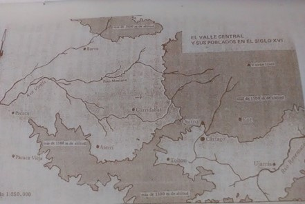
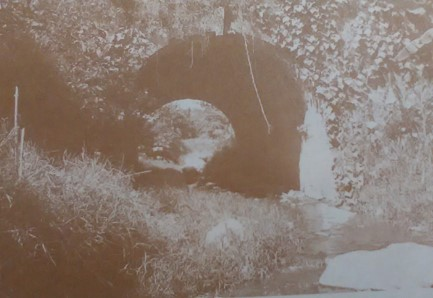
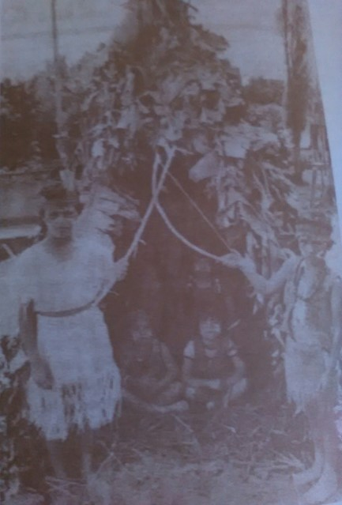

Quircot: Historia, costumbres y tradiciones.
- Bryan Morales S -
Justificación
El pueblo colonial de Quircot es uno de los cinco primeros pueblos que dieron origen a la provincia de Cartago, es por este motivo que radica su importancia en la historia de Costa Rica.
Objetivos
Objetivo General
✓ Informar sobre la historia del pueblo colonial de Quircot, incluyendo las tradiciones y costumbres que lo han caracterizado a través del tiempo.
Objetivos
Objetivos específicos
✓ Conocer la historia del pueblo colonial de Quircot y su importancia en la cronología de Costa Rica.
✓Mencionar las costumbres y tradiciones de los habitantes del pueblo de Quircot a través del tiempo.
Historia del pueblo colonial de Quircot
En la época precolombina el Valle del Guarco era uno de los territorios más importantes.
Organización
Vivían en palenques (Casa típica), en donde estaban conformados matrilinealmente.
Consumían pejibayes y tubérculos como sustituto del maíz.

Religión
“La fertilidad de la naturaleza, quizá venido de Amazonia; el ave de pico, posible influencia antillana y la cabeza trofeo, llegada quizá del noreste de Sudamérica.” (Monge, 1982, p.61).
Sitio estratégico
Uno de los aspectos importantes a nivel geográfico y político de Quircot era que el Guarco contaba con una ubicación adecuada a las actividades y funciones que se realizaban en el país. Este valle como sabemos cuenta con depresiones que facilitaban el acceso y las conexiones con otras pueblos del área costarricense.
Sitio estratégico
1840
La iglesia de Quircot en conjunto a la de Cot y Tobosi fueron unidas a Cartago, esto quiere decir que perdieron su rango de parroquias.
1869
Quircot prestó a la municipalidad de Cartago una suma de ochenta mil pesos.
1848
Quircot pasó a ser un pueblo junto con Cot y Tobosi.
1890
Se inaugura la vía férrea del ferrocarril al Atlántico que pasa a unos 40 metros de la Iglesia Colonial de Quircot, desde entonces pasó la “línea del tren” como es comúnmente llamada la vía férrea, a formar parte del paisaje y patrimonio de Quircot.
El templo colonial
Hoy en día un referente importante del pueblo de Quircot es su templo, el cuál fue fundado en el año 1650, construído con horcones y paja.
Algunos escritos periodísticos dicen que Quircot poseía una pequeña ermita que poseía una imagen de nuestra señora Inmaculada Concepción originaria de Guatemala. Este hecho fue el que le dio nombre a la comunidad evangelizada como “Inmaculada Concepción de Quircot” para la época de 1650 que mencionamos anteriormente.
4 de mayo de 1910
La ermita de Quircot sufrió serios daños.
1917
“Si el gobierno duerme, nosotros nos mantenemos despiertos”.
1918
Un grupo rebelde de Ochomogo se atrincheró en el templo.
1976
El Departamento de Patrimonio Histórico del Ministerio de Cultura, Juventud y Deportes, inició los trabajos de construcción, consolidación y reestructuración de la humilde ermita de Quircot.
20 de noviembre de 1986
La ermita de Quircot fue declarada “De interés histórico” en el decreto N°17344 C.
Reconstrucción de la ermita.
Antes
Estado de la ermita antes de los procesos de reconstrucción y reestructuración.
Después
Estado de la ermita después de la conclusión de la obra.
Tomadas del libro Reseña histórica del pueblo colonial de Quircot.
Reconstrucción de la ermita.
Se recuperó una herencia de los indígenas de aquella época, herencia cultural como lo llama Marco Calvo, quien además añade que con el renacimiento de Quircot vamos consolidando un patrimonio propio de un pueblo pasado y con esperanzas de futuro, porque cuando el sustento material y espiritual del legado histórico se pierde, las tradiciones nacionales se debilitan.
Puentes de arco
Puente de arco sobre el río Amapola. Tomada del libro de Marco Camacho.
Construidos por una compañía inglesa, alrededor de 1874, para aminorar la empinada cuesta por donde pasaría la ruta del tren.
Naciente
Quircot cuenta con una naciente que producía 26 litros por segundo.
Ahora es propiedad de la Municipalidad de Cartago junto con Quercuá, lo que hoy se conoce como Río Loro, que produce 60 litros de agua por segundo que son distribuidos en el Carmen de Cartago.

Costumbres y tradiciones
Los indígenas se dedicaban a:
- Cultivos de subsistencia.
- Actividades ganaderas.
- Fabricación de cestos.
- Actividades médicas.
-Practicaban su religión (Rituales con bailes y danzas)
Vestimenta
Imagen de la Nación del 08 de diciembre de 1986.
Luego de la conquista
Quircot adoptó la religión católica, la cual es una de las principales razones por las que se caracterizan los pobladores de esta zona y en especial su iglesia colonial.
Por esta razón los habitantes de este pueblo eran invitados a celebraciones relogiosas como el Corpus Christi.
Celebración de los 405 años
“Esta es una comunidad olvidada e ignorada hasta por el ICT, nosotros nos debemos dar el lugar que merecemos, y no esperar que nos lo den otros”
— Padre Jesuita Carlos Arias Monge
Fabricación de pólvora
Bajo el mando de la familia Calvo que es famosa tanto en el país como en el extranjero.
Corpus Christi
Una de las costumbres que se perdió en el pueblo de Quircot fue el Corpus Christi que se hacía de Taras a Quircot, esta actividad se empezó a realizar en 1961.
Se adornaban las calles con aserrín y flores haciendo un estilo de alfombra, también utilizaban arcos por todo el trayecto del camino, flecos, ángeles, caña de indios y ramas de árbol uruca.
Corpus Christi
La actividad comenzaba a las diez de la noche y terminaba el día posterior a las diez de la mañana, todos eran invitados, desde los niños hasta las personas mayores. Se repartía café, tamales, pan casero, bizcocho principalmente en la noche por medio de las señoras que eran las encargadas de la cocina.
Catarata del Padre Méndez
Ubicada masomenos a un kilómetro y medio al norte del templo colonial.
Los fines de semana las familias solían visitarla y realizar un almuerzo para compartir sanamente, también era un lugar visitado por los niños después de las lecciones o en las mañanas, en donde muchos les gustaba “bañarse”, nadar, chapucear o simplemente visitarla.
Referencias bibliográficas
- 🕮 Calvo, M. (2005). Reseña histórica del pueblo colonial : Quircot ayer y hoy. Cartago: Editorial Cultural Cartaginesa.
- 🕮 CH., C. M. (2017, January 19). Carlos Meléndez CH. Retrieved May 18, 2017, from http://www.persee.fr/doc/carav_0008-0152_1981_num_37_1_1576
- 🕮 EcuRed El Guarco. Retrieved May 10, 2017, from https://www.ecured.cu/El_Guarco
- 🕮 Fonseca, E. (1983). Costa Rica colonial: la tierra y el hombre. Costa Rica, San José: EDUCA.
- 🕮 Monge Alfaro, C. (1982). Historia de Costa Rica. Editorial Costa Rica.